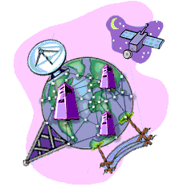

|
FUTURE OF INTERNET |
 |
When the World Wide Web began in 1990, few suspected how successful it would become. There are now millions of websites with over one billion web pages. But as most people are well aware, the Web can be painfully slow. Most people connect to the Internet using modems and telephone lines. Because the data-carrying capacity of telephone lines, known as bandwidth, is low, receiving electronic data can take a long time. New technology promises to addresses this problem. |
Connecting to the Internet using fiber optic lines and via cable TV will increase bandwidth dramatically, making the Web more powerful. Expect to see an explosion of e-commerce, collaborative projects, videoconferencing and virtual environments. Many of these applications are already in use in some form, or are under development. Internet2 The incubator for some of the emerging technologies that will shape the future is known as Internet2. Formed in 1996 and administered by the University Corporation for Advanced Internet Development (UCAID), Internet2 is a partnership of universities, corporations and government agencies. It's a Petrie dish for networking experiments. The project's goals are to create new applications that can't run over the existing Internet and to develop the infrastructure that supports those applications. Internet2 is a not a single network, but a consortium of hundreds of high-speed networks linked by fiber optic backbones that span the U.S. It transmits data at speeds up to 2.4 gigabits per second-45,000 times faster than a 56 K modem, allowing scientists to test their laboratory discoveries in the real world. The next-generation network went online in February, 1999, linking a number of universities around the world. It should be available for commercial use in a few years. Then, get ready for 21st century services like interactive television, virtual 3-D videoconferencing, movies-on-demand, and much more. High-speed networks will make it possible for professionals around the world to work in ways never before possible. For instance, scientists around the world can share specialized equipment like electron microscopes. NASA has developed a Virtual Collaborative Clinic that connects medical facilities around the U.S., allowing doctors to manipulate high-resolution, 3-D images of MRI scans and other medical imaging. Not only can doctors consult and diagnose, but they can simulate surgery by using a "CyberScalpel." Virtual surgery will give surgeons an opportunity to prepare before ever entering the operating room, reducing the time required for the actual procedure. Using this kind of virtual technology, local hospitals will be able to access resources and skills only available at larger institutions. NASA plans to use the technology to provide remote health care to astronauts on extended space journeys. A New Kind of Web While computers are now the primary means of accessing the Internet, we're already seeing other Internet-enabled devices, such as pagers and cell phones, which can send and receive e-mail and access the Web. Soon, everything from your car to your refrigerator may be connected to the network, communicating with each other wirelessly. Electrolux, best known for its vacuum cleaners, has developed the ScreenFridge, an Internet icebox that manages your pantry, among other things. It can e-mail a shopping list to your cyber-supermarket and coordinate a convenient delivery time with your schedule. Say hello to a brave, new world.